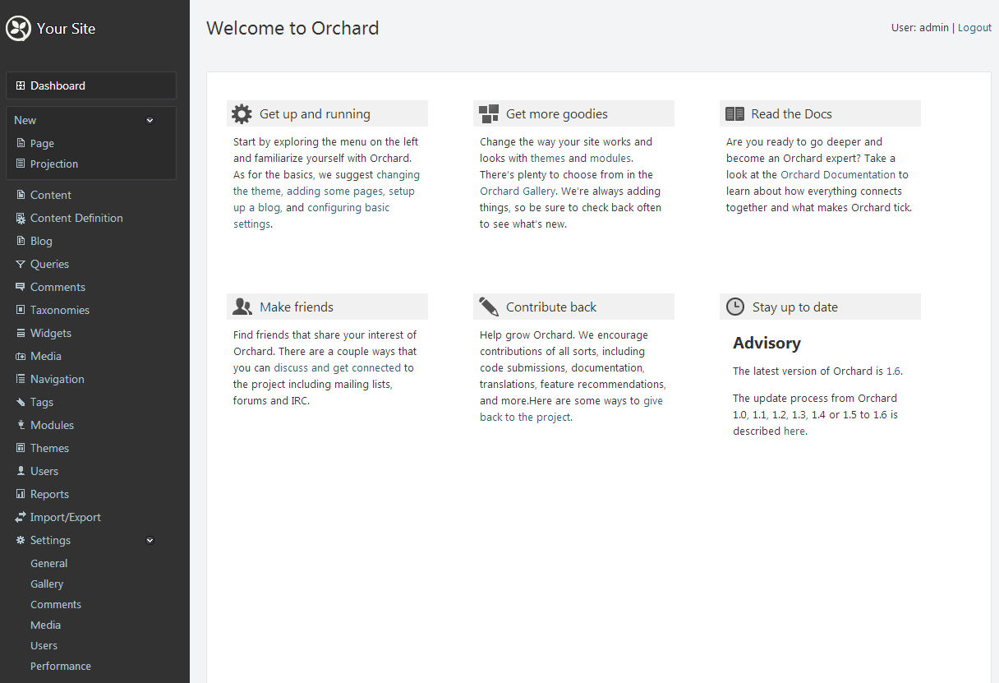
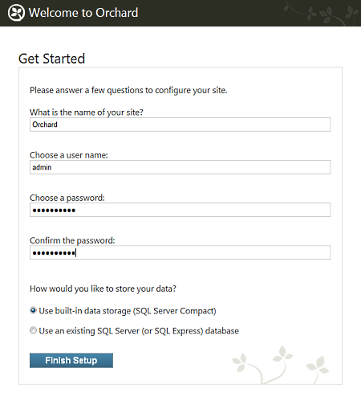
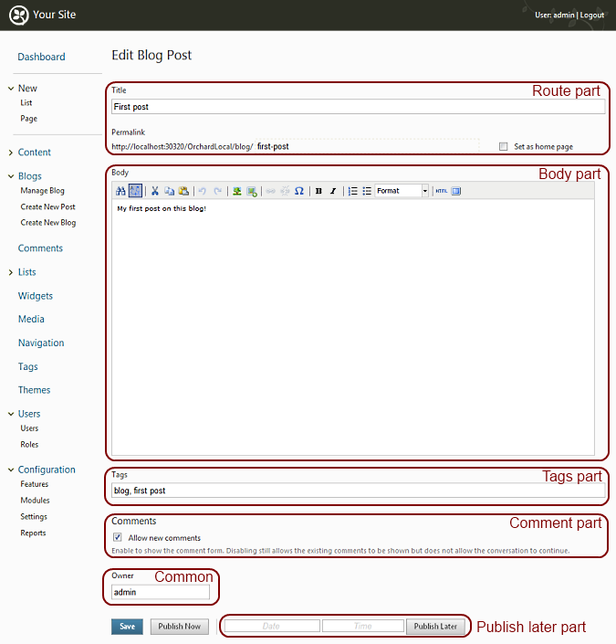
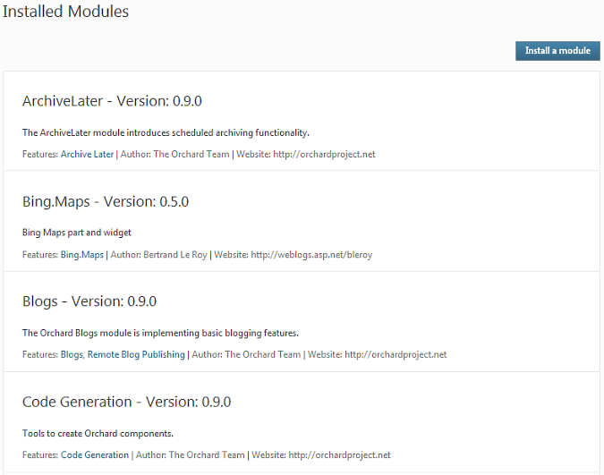
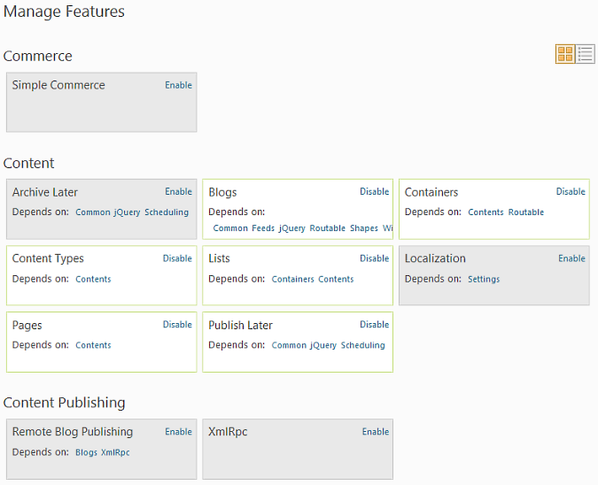
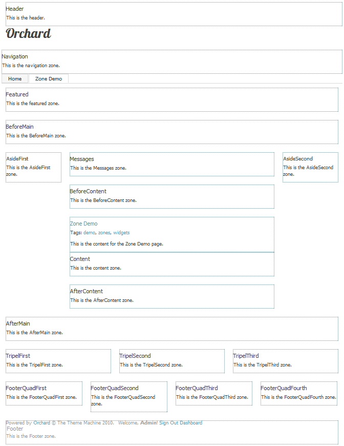
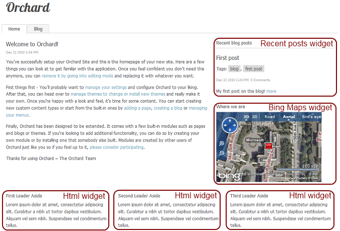

Orchard is a Web CMS, which essentially aims at helping you build web sites from existing pieces. Those pieces come in a few different sizes and shapes that need to be well understood if you're going to be productive with them. This article will go through those pieces and explain their names and behavior.
General CMS definitions
Content
The 'C' in CMS means "content" so it would be fair to say that content is anything that the CMS manages. More precisely, content is everything in the site that has any information in it. For example, a blog post, a comment, a product and even the navigation menu or your company's logo are identifiable, individual pieces of content. If you were thinking at this moment that content is pretty much everything on the site you'd be right. If you were thinking that is pretty vague, you'd be right as well. We will get a lot more specific and distinguish between different kinds of content in following sections.
Admin panel, Dashboard or back-end
The admin panel (sometimes also called dashboard or back-end) is where you manage your site and its content. It is restricted to users who have the "Access admin panel" permission. This is the 'M' in CMS.

CMS
The 'S' in CMS is for "System", which is not as vague and meaningless as it seems. It's important that a CMS manages content in a systematic way: this means that all content is managed homogeneously, which enables mutuality of resources.
For example, you can manage blog posts, pages and products using common tools, and all of those can get comments, ratings or tagging from common modules. This gives you a more consistent experience and facilitates the creation of new types of content.
Front-end
The front-end is the part of the site that is accessible to regular and anonymous users. In other words, it's the public-facing part of your site: everything but the admin UI.

Setup
Setup is the process you must follow in order to get your web site to working condition (and no more than that, you still have work to do after it's done, such as creating content).

Orchard concepts
Content Item
A content item is a single piece of content, often associated with a single URL (address) on the site. Examples of content items are pages, blog posts or products.
Content type
Content items are instances of content types. Said differently, content types are classes of content items. We said in the previous section that examples of content items are pages, blog posts, and products. Those three examples also describe three content types: page, blog post and product. In other words what we call a blog post is just an item of type blog post.
Content Part
In Orchard, content types are built from smaller parts, that are conveniently called content parts. Content parts are atoms of content that are enough to build a specific coherent behavior and that can be reused across content types.

For example, comments, tags or ratings are content parts because they define a specific behavior and can be reused by any content type. There is nothing in comments that is specific to a given content type such as blog posts. Comments can be equally useful on blog posts as they would be on pages or products.
There can be only one of each part on any given content type.
Content Field
Content fields are pieces of information that can be added to a content type. Content fields have a name and a type and are specific to a content type. There can be several of each field type on any given content type.
For example, a Product content type can have a text field representing its Sku, a numeric field representing its price, and another numeric field representing its weight. Each of these fields probably only makes sense on a product.
Note: it would be possible to create a product part with three properties that would be roughly equivalent to this set of fields. This would have the advantage of making it possible to transform any content type into a product. Each approach is a valid choice and Orchard allows for both.
Module
The various custom extensions that can be built for Orchard are typically built as modules. A module is a set of extensions for Orchard that are grouped under a single sub-folder of the Modules directory that can be found under the Orchard web site.
Optional modules for Orchard can be found in the Orchard Gallery (see the menu entry on top of this page).

Feature
A module can contain one or more features, which is a logical grouping of functionality that can be enabled or disabled individually. For example, a custom authentication module could have separate features for OpenID, FaceBook, LiveID, Twitter or Google authentication that can each be turned on or off.
Features can depend on each other, whether they are in the same module or not.

Manifest
A manifest is a small text file that describes a module or a theme to the system.
Here is an example of a manifest:
Name: Comments
AntiForgery: enabled
Author: The Orchard Team
Website: http://orchardproject.net
Version: 1.8.1
OrchardVersion: 1.8
Description: The comments system implemented by this module can be applied to arbitrary Orchard content types, such as blogs and pages. It includes comment validation and spam protection through the Akismet service.
Features:
Orchard.Comments:
Name: Comments
Description: Standard content item comments.
Dependencies: Settings, Orchard.Tokens
Category: Social
Orchard.Comments.Workflows:
Name: Comments Workflows Activities
Description: Provides workflow activities for comments management.
Category: Workflows
Dependencies: Orchard.Workflows
UI composition
Orchard manages content that is composed from parts. It needs a mechanism that orchestrates the display while taking into account the composite nature of the content. This is why we talk about UI composition, as elementary bits and pieces of content need to be composed into a harmonious and consistent whole. Several concepts contribute to this UI composition.
Theme
When designing a web site, it is important to be able to modify the visual look of every single aspect of the site. Orchard provides a clean separation between the content management and the visual rendering of the content.
A theme is a packaged look and feel for an Orchard site. It can consist of any combination of style sheets, images, layouts, templates and even custom code. It is even possible to create a theme that inherits from another, which is very useful if you are trying to make only small modifications on an existing theme.

Layout
A layout is a file in a theme that defines the general organization of the pages of the site that use it. A layout typically defines a set of zones where contents or widgets can be inserted.

Template
Each content part, each field and each widget will need to be graphically represented in the front-end, transforming the data that it represents into a form that can be read by the users of the site. A template is the recipe that formats that data and transforms it into HTML for the browser to display. You can think of a template as plain HTML with well-defined "holes" where data gets inserted.
Here is an example of a template that displays the title from the Route part:
<h1>@Model.Title</h1>
Shape
Before displaying something using a template, that something gets transformed into a shape, which is a very malleable object that contains all the information required in order to display it. Before getting rendered by templates, everything gets mapped into a tree of shapes that is a sort of abstract representation of the contents of the final page. The advantage of such trees of shapes is that any module can modify existing shapes or create new ones.
The layout, zones, widgets and content parts all get represented as shapes as part of the rendering process.
One could imagine for example a Gravatar module that would add avatar icon shapes to the comment shapes that were created by the comment module. In the same way, the layers from the widget module are adding widget shapes to the zone shapes of the layout shape.
Placement
When rendering the collections of parts and fields -or any other shapes- that compose a page or content item, Orchard needs to know in what order to do so. Placement.info files are XML files that describe rules that can be used to determine what shapes go into what zones and in what order. This enables not only the rendering of each shape to be customized, but also the order in which they get rendered.
Here is an example of a placement file:
<Placement>
<Place Parts_Map="Content:10"/>
<Place Parts_Map_Edit="Content:7.5"/>
</Placement>
Zone
Zones are specific parts of a layout that can be customized by inserting widgets. In some themes, zones are collapsible, which means that they disappear if they contain no active widget.
Widget
A widget is a small fragment of UI that can be added to some or all pages of the site. Examples of widgets are tag clouds, maps, archives, a search form, or recent blog posts.

Layer
A layer is a group of widgets (with their specific configuration, which includes their positioning -zone name and ordering-) that is activated by a specific rule.
For example, the TheHomePage layer is activated by a rule that specifically selects the home page. The Default layer is always active no matter what page is displayed. The Authenticated layer is only active when users have identified themselves.
When more than one layer is active on any given page, all the widgets from all those layers get displayed at the same time. Orchard orders them based on their position string.
Security
Users and roles
In Orchard, users can be attributed roles, which can be seen as stereotypes of users. Permissions can then be attributed to roles in order to define who can do what on the site (more on this in the next section). Any user can have one or several roles.
Site owners can create their own roles but Orchard comes with built-in roles that should cover most sites' requirements:
- Administrator: have full control over the site's settings and contents.
- Editor: does not create content but edit and publish content created by authors.
- Moderator: validates user-created contents such as comments.
- Author: writes and publishes his own content.
- Contributor: writes content but does not necessarily have the rights to publish it.
- Anonymous: an unknown user, someone who hasn't logged in.
- Authenticated: any user who has logged in.
Neither Anonymous nor Authenticated can be assigned to a user manually. Rather, they are determined dynamically at runtime.
Privileges and Permissions
All users don't have the same rights and privileges in Orchard: the site owner can choose who can create content, who can write or validate comments, etc. Rights and privileges are represented as permissions. In Orchard, permissions are granted to roles but are not explicitly denied. In other words if a user belongs to any role that has a given permission, he has that permission. To revoke a permission, you need to either remove a user from the role the permission has been granted to or you need to remove that permission for the whole role.
Some permissions are "effectively granted". This means that they have not been explicitly granted, but that they have been implied by another permission. For example, if you grant the site owner permission, you are implicitly granting all the other permissions.

Permissions, as well as their default settings for the built-in roles, are defined by modules. This means that if you build your own module, you can define specific permissions to accompany it.
Site owner
The site owner, sometimes also called "super user" is a special user that is defined at setup time and that has all the rights on the site. It can be changed from the settings admin screen if you have the permission to do so.
There is a permission called "Site Owners Permission" that grants the same right and that is granted by default to only members of the Administrator role. We advise never to grant that permission to any other role.
Development
In this section we will describe concepts that are only required for module developers.
ASP.NET MVC
ASP.NET MVC is the Web framework that Orchard is built on.
Handler
A handler is similar to an MVC filter in that it contains code that will execute for specific events of the request life-cycle. They are typically used to set-up data repositories or to do additional operations when something gets loaded.
Driver
Drivers are similar to MVC controllers, but they act at the level of a content part instead of at the level of the full request. They typically prepare shapes for rendering and handle post-backs from admin editors.
Record
A record is a class that models the database representation of a content part. They are POCOs where each property must be virtual.
Model
What plays the part of the model for a content part is the part class itself. Some parts also define view models, in the form of strongly-typed classes or of more flexible dynamic shapes.
Migration
A migration is a description of the operations to execute when first installing a feature or when upgrading it from a version to the next. This enables smooth upgrades of individual features without data loss. Orchard includes a data migration framework.
Injection
Inversion of Control, or injection, is widely used in Orchard. When any piece of code requires a dependency, it will typically demand the injection of one or several instances of a specific interface. The framework will take care of selecting, instantiating and injecting the right implementations at runtime.
Change History
- Updates for Orchard 1.8
- 9-6-14: Updated all screen shots for setup, dashboard, content parts and modules/features.